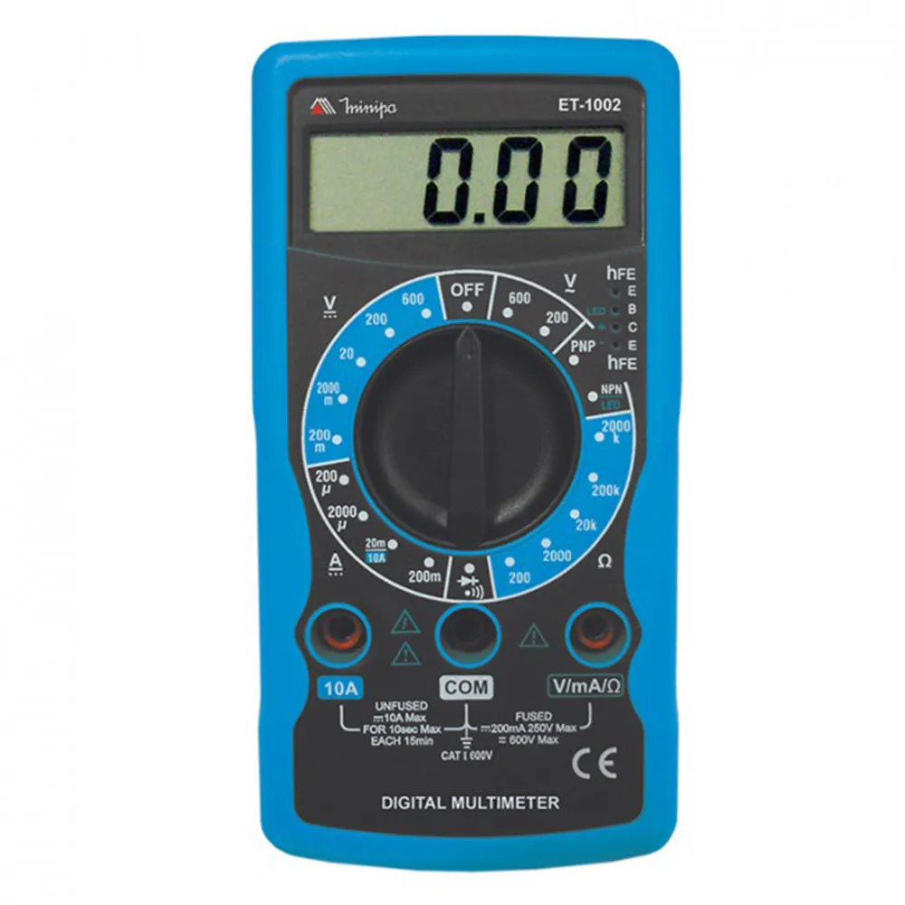
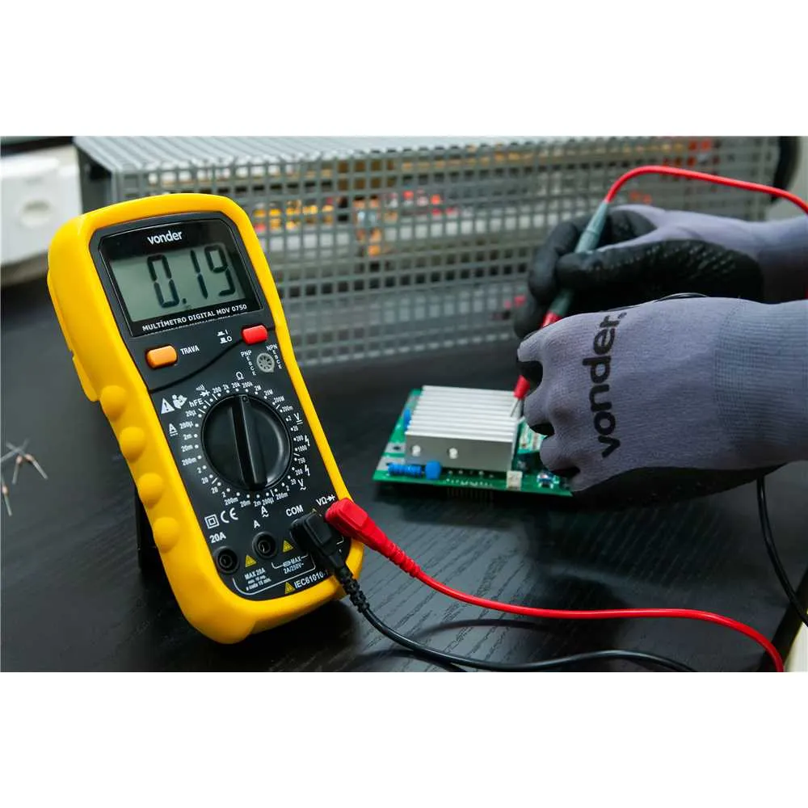
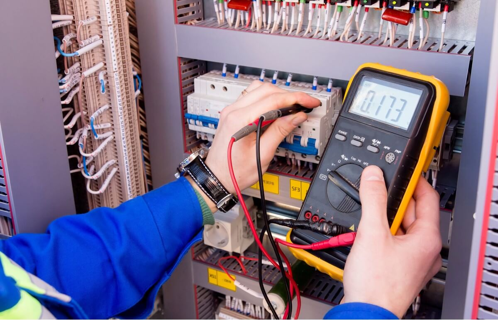

Multímetro
Instrumento essencial para medir e avaliar grandezas elétricas como tensão, corrente e resistência.
Conceito e Aplicação
O multímetro é um instrumento de medição utilizado para verificar tensão, corrente e resistência elétrica em circuitos elétricos, eletrônicos e sistemas de automação industrial. Permite diagnósticos precisos em manutenções preventivas e corretivas.
- Medição de tensão AC e DC;
- Medição de corrente elétrica;
- Medição de resistência e continuidade;
- Teste de diodos, capacitores e transistores.
Informações Complementares

Funcionamento
O multímetro realiza medições elétricas em circuitos e componentes, permitindo verificar tensão, corrente e resistência.

Aplicações
Utilizado em manutenção elétrica, eletrônica e automação industrial para testes, diagnósticos e análise de circuitos.

Vantagens
Oferece praticidade, precisão e segurança nas medições elétricas, auxiliando técnicos em diagnósticos industriais.
Empresas
A Fluke, a Minipa e a Hikari são algumas das principais fabricantes de multímetros utilizados em manutenção elétrica, eletrônica e automação industrial.
: Referência mundial em instrumentos de teste e medição de precisão para aplicações industriais e laboratoriais.
: Empresa brasileira com ampla linha de multímetros para uso profissional e educacional em eletricidade e eletrônica.
: Fabricante nacional de instrumentos de medição com foco em qualidade e acessibilidade para técnicos e profissionais.